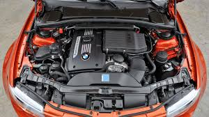

|
¿WHO WE ARE?
We are a team of passionate automotive experts, BMW enthusiasts, and skilled technicians dedicated to helping BMW owners overcome engine failures and performance issues. With years of experience in diagnosing and repairing BMW engines, our team has built a reputation for providing reliable, accurate, and practical solutions. Our mission is to offer valuable insights, tools, and resources to help drivers maintain and repair their BMWs, ensuring they get the most out of their vehicles. Whether you're a seasoned mechanic or a first-time BMW owner, we're here to guide you through every step of the repair process with confidence and expertise.
Our intentions are to present a solution for the typical engine
failures that suffer bmw once they reach the 100.000km mark on the dashboard.
|

|